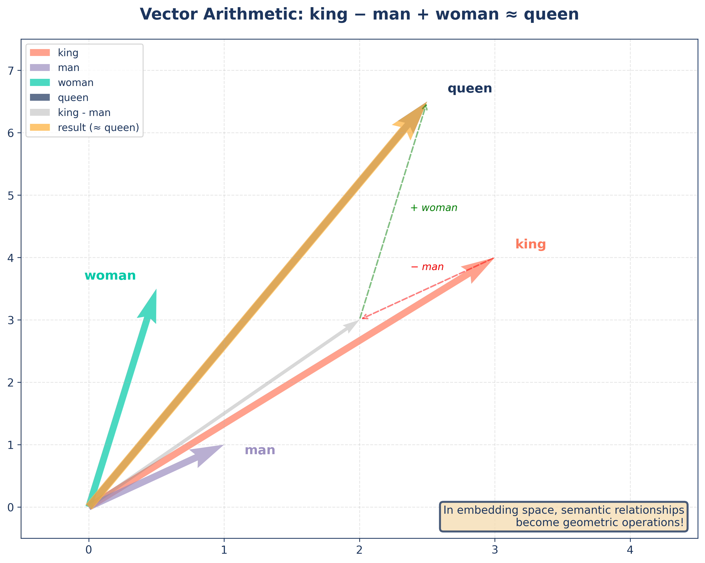

Generative AI Fundamentals
Architecture Fundamentals — Session 1
2026-11-10
What is Generative AI?
Before we build with it — let’s define it.
It generates — it doesn’t retrieve
AI that generates new content — text, images, code, audio — by learning patterns from existing data.
The distinction
A search engine finds content that already exists. A generative model creates content that may never have existed.
Agenda
A. From Words to Intelligence
B. The ChatGPT Revolution
C. In-Context Learning
D. Thinking Models
E. Under the Hood
F. Key Intuitions
A. From Words to Intelligence
One question: how did predicting the next word become this?
What comes next?
*“The capital of Saudi Arabia is ___“*
Riyadh — 99.8%
Jeddah — 0.1%
Paris — 0.00001%
Anything that can finish this sentence has already learned something about language.
The first models just counted
\(P(\text{word} \mid \text{sentence}) = \dfrac{\text{count}(\text{sentence} + \text{word})}{\text{count}(\text{sentence})}\)
Input: a sentence. Output: whatever word followed it most often in our data.
1948 — Claude Shannon
The father of Information Theory scored language this way with n-gram letter and word frequencies. The math of next-word prediction is older than any computer we would recognise.
One word at a time
Prompt: “The sky is”
Step 1 → "The sky is" ➜ blue
Step 2 → "The sky is blue" ➜ and
Step 3 → "The sky is blue and" ➜ clear
Step 4 → "The sky is blue and clear" ➜ <EOS> 🛑
Score, pick, append, repeat. That loop is the entire mechanism — the lab runs it in eight lines of Python.
Counting fails on new sentences
“The quiet fox dreams about” ➜ count = 0
Zero counts means zero knowledge. Novel sentences break it — and there are more possible sentences.
So: can we build a better function — one that understands words instead of counting them?
Meaning became geometry
A neural network learned to place each word at a point in space — a vector of coordinates that captures its meaning.

Neighbors share meaning — “king” and “queen” land close, and the Arabic and English words for “house” land side by side.
Same function, better machine
1948: \(P\) = count frequencies → pick the most common next word
2003: \(P\) = a network (Bengio et al.) → pick the word that makes sense
Then the architecture changed (2017)
Before 2017, models read text sequentially — one word at a time, left to right (LSTMs).
The Transformer (“Attention is All You Need”, Google) reads the whole sequence at once:
- Parallel — every position computed simultaneously
- Self-attention — every word looks at every other word to decide what matters
Why it mattered
This is the engine inside GPT, Claude, Gemini, Llama. Without it, internet-scale training was impossible.
Then we made it enormous
| Model | Year | Parameters |
|---|---|---|
| GPT-1 | 2018 | 117M |
| GPT-2 | 2019 | 1.5B |
| GPT-3 | 2020 | 175B |
2020: the surprise
At 175B, GPT-3 could translate, summarize and write code — without being trained for any of them.
One mechanism, many jobs
| Prompt prefix | What the model does |
|---|---|
"Once upon a time" |
Continues as a story |
"Translate to Arabic: Hello → " |
Completes the translation |
"def reverse(" |
Writes the code body |
The key insight
Translation, summarization and coding are all completion tasks. The model never switches modes — it completes the pattern in front of it.
The evolution so far
🔤 Statistical LMs
(1948) count words
→
🧠 Neural LMs
(2003) words as vectors
→
⚡ Transformers
(2017) parallel attention
→
🚀 LLMs
(2018–20) scale
→
💬 ChatGPT
(2022) coming next
The task never changed — only how well it is predicted.
B. The ChatGPT Revolution
A 2020 model could complete anything — so why couldn’t it answer a question?
A raw completer is not an assistant
Base model: “Write me a poem”
It continues your sentence.
What changed?
Not the completion mechanism — the training data.
Supervised Fine-Tuning (SFT)
Human annotators wrote thousands of correct question → answer pairs. The model was trained to imitate them.
The model learned a new pattern: a prompt is a command, not text to continue.
RLHF in 30 seconds
- Generate several responses to the same prompt
- Humans rank them — which is better?
- Train a reward model on those preferences
- Tune the model against that reward model
SFT teaches it to answer. RLHF teaches it to answer the way people prefer.
Three models, one foundation
Base model
raw completion
→
Instruction-tuned
follows commands
→
Chat-optimized
multi-turn dialogue
The dashed node from Section A is now filled in.
C. In-Context Learning
Can you teach a model a new task without training it at all?
The insight
SFT needed a new training run — data, annotators, GPUs.
There is a cheaper way:
show the model examples in the prompt.
GPT-3 (2020) adapted to a new task from a handful of examples — no retraining. The examples are the training.
Zero-shot vs few-shot
Simple rule
When zero-shot is inconsistent, add 2–3 examples. That is usually enough.
The system prompt is configuration
Change the system prompt → change persona, tone and constraints. No retraining.
Four levers you control
Prompt engineering, in four moves
- Role — “You are an expert in…”
- Format — JSON, markdown, bullet points
- Constraints — “Respond in under 100 words”
- Examples — 2–3 in-context demonstrations
D. Thinking Models
Can a prompt make a model think before it answers?
“Let’s think step by step”
One phrase, 2022, and math accuracy nearly doubled.
Why writing helps
The model doesn’t think before it writes — it thinks by writing.
- More words before the answer = more computation
- Each written step constrains what the next step can plausibly be
More words = more thinking.
From prompt trick to product
Chain of Thought
(2022) prompt trick
→
o1
(2024) trained to reason
→
DeepSeek-R1
(2025) open weights
→
Extended thinking
(2025) thinking budget
→
Adaptive thinking
(2026) model decides
We went from prompting a model to think, to training it to reason, to letting it decide how much.
The trade-off
| Standard model | Thinking model | |
|---|---|---|
| Response time | ~1 second | ~15–30 seconds |
| Cost | Low | 3–10× higher |
| Best for | Chat, summarization, extraction | Math, coding, complex reasoning |
| Failure mode | Guesses, sounds sure | Thinks too long on easy tasks |
When to use one
Use a thinking model when correctness matters more than speed — audits, code generation, structured extraction. Not for real-time chat.
Controlling the reasoning
| Mode | Who decides | What you set | Example |
|---|---|---|---|
| Native | The model | Nothing — it stops itself | DeepSeek-R1 (native) |
| Extended thinking | You | A hard thinking budget | Gemini 2.0 / 2.5 |
| Adaptive thinking | Both | An effort level — low / medium / high |
OpenAI o1 / o3-mini |
Next session this is one parameter — API & Provider Landscape
E. Under the Hood
The mechanics behind everything you have been using
Pieces, not words
The model doesn’t see words. It sees tokens — fragments of words.
- Sometimes half a word, sometimes a whole one
- Cheaper than a dictionary of every possible word
- So it can handle words it has never seen before
Simple rule
1,000 tokens ≈ 750 words in English. You are billed per token, and Arabic costs more per word.
It outputs probabilities, not facts
“According to Article 214 of …”
- the — 45%
- foreign — 30%
- capital — 15%
- unicorn — 0.01%
The decision
It doesn’t always take the top token. Sampling parameters control how it chooses from this list.
Always picking the top word is a trap
Prompt: “Tell me a joke.”
| Run | Response |
|---|---|
| 1st | “Why did the chicken cross the road? To get to the other side.” |
| 2nd | “Why did the chicken cross the road? To get to the other side.” |
| 3rd | “Why did the chicken cross the road? To get to the other side.” |
Greedy decoding
Always taking the top token makes the model repeat itself forever — deterministic and robotic.
We need randomness — but controlled randomness.
Sampling: a bag of balls 🎱
The number of balls for each word is proportional to its probability.
| Token | Probability | In the bag |
|---|---|---|
| the | 45% | 🔵🔵🔵🔵🔵🔵🔵🔵🔵 (45) |
| foreign | 30% | 🟢🟢🟢🟢🟢🟢 (30) |
| capital | 15% | 🟡🟡🟡 (15) |
| unicorn | 0.01% | 🔴 (barely one) |
The draw
Reach in and pull one ball at random. Usually “the” — but not always. “Unicorn”? Almost never.
Temperature, Top-K and Top-P only change how many balls each word gets.
Temperature: the creativity dial
Drag the dial — watch the balls move between the bags.
Top-K: the shortlist
Keep the \(K\) most likely tokens. Throw the rest away.
“According to Article 214…” with \(K = 2\)
- the (45%) ✅ kept
- foreign (30%) ✅ kept
- capital (15%) — cut
- unicorn (0.01%) — cut
Effect
Impossible-sounding words can no longer be drawn at all.
Top-P: the smart cutoff
Keep tokens until their probabilities sum to \(P\) (say 0.9).
Open question — “According to Article 214 of…”
- the (45%) + foreign (30%) + capital (15%) = 90% → three kept
Certain answer — “The capital of Saudi Arabia is…”
- Riyadh (99.8%) → one kept
Why Top-P usually wins
It adapts: strict when the answer is settled, flexible when it is open.
Cheat sheet
| Parameter | Effect | Typical value |
|---|---|---|
| Temperature | Randomness | 0.0 facts/code · 0.7 chat · 1.0 creative |
| Top-P | Dynamic vocabulary | 0.9 standard · 1.0 off |
| Top-K | Hard vocabulary limit | 40–100 (or leave default) |
Best practice
Tune temperature and Top-P. Leave Top-K at its default.
Hallucinations are structural
Not a bug — the model doing its job without enough context.
- Probability over truth — it picks likely words, not verified facts
- Plausibility over accuracy — it is trained to sound right
- Training gaps — no “Saudi Investment Law” in the data? It invents one that reads like law
Production risk
Confident, fluent lies are harder to spot than obvious errors — and that is a legal and financial risk.
Mitigations
| Strategy | How it works | When |
|---|---|---|
| RAG | Ground answers in retrieved documents | Most enterprise apps (RAG module) |
| Output validation | Check against rules or structured data | Factual claims, numbers |
| Temp = 0 | Take the most likely path | Extraction, classification |
| Human-in-the-loop | A person reviews before action | Critical decisions |
The core lesson
The same mechanism writes a creative novel and a confident lie. Control the mechanism, or supply the data.
F. Key Intuitions
What you know, and what’s next
Key takeaways
- It generates — it predicts what comes next; it does not look things up.
- Completion is the primitive — translation, coding and chat are all next-token prediction.
- Scale created ability — GPT-3 learned to translate as a side effect.
- SFT made assistants — new data, same architecture.
- In-context learning — teach a new task inside the prompt.
- Thinking models — better answers, slower and costlier.
- Hallucinations are structural — plausible is not true.
What we intentionally skipped
| Skipped | Why | When you’ll need it |
|---|---|---|
| Transformer architecture | You don’t need it to build | Academic curiosity |
| Attention math | Same reason | Deep ML research |
| KV-cache mechanics | Not relevant yet | API & Provider Landscape — it drives your API bill |